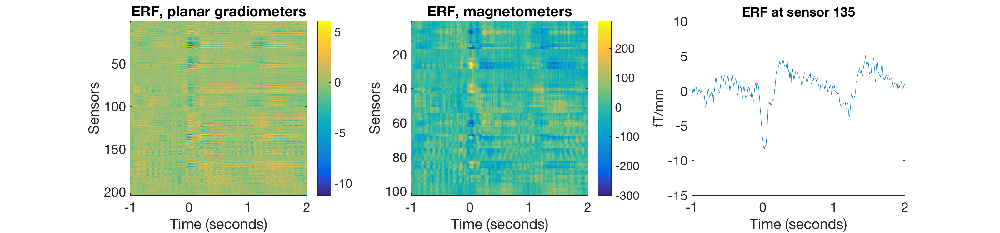

Preproc - automatic processing
This is an example for running the OHBA recommended preprocessing pipeline on Elekta-Neuromag data (a very similar pipeline will work on CTF data as well) using OPT (OSL's preproscessing tool). It works through basically the same steps as you would for the manual preprocessing (see manual practical ), but this time it is all automatized.
Contents
This practical is also available as a template script in your osl example folder. For today's workshop we will copy and paste directly from the osl website. We will work with a single subject's data from a button press experiment. The data should be available in your installation already. Note that this contains the fif file: fifs/loc_S02_sss1.fif, which has already been SSS Maxfiltered and downsampled to 250 Hz, and which we will used for this analysis.
SET UP THE MATLAB PATHS, DIRECTORIES AND FILES
You should not need to run this if you have already done this previously. If MATLAB has trouble finding any osl functions, run:
osl_startup;
SPECIFY DIRECTORIES FOR THIS ANALYSIS
Set the data directory where the data is, this should be the correct path already:
datadir = fullfile(osldir,'example_data','preproc_example','automatic_opt')
SET UP THE LIST OF SUBJECTS
Specify a list of the existing raw fif files for subjects for input into Maxfilter. Note that here we only have 1 subject, but more generally there would be more than one, e.g.: raw_files{1}=[testdir '/fifs/sub1_face_sss']; raw_files{2}=[testdir '/fifs/sub2_face_sss']; etc... OR Specify a list of the input files to be converted into SPM SPM files (which will be created as output). It is important to make sure that the order of these lists is consistent across sessions.
clear raw_fif_files input_files spm_files structural_files; raw_fif_files{1}=[datadir '/fifs/loc_S02.fif']; input_files{1}=[datadir '/fifs/loc_S02_sss1.fif']; spm_files{1}=[datadir '/spm_files/loc_S02'];
SET UP STRUCTURALS
Setup a list of existing structural files, in the same order as spm_files and fif_files: Note that here we only have 1 subject, but more generally there would be more than one. Here we do not use them, but for any source-reconstruction following OPT you would need them.
structural_files{1}=[datadir '/structs/anat.nii']; % leave empty if no structural available
SETTING UP AN OPT ANALYSIS
This sets up an OPT struct to pass to osl_check_opt, by setting the appropriate fields and values in the OPT struct. Note that some fields are mandatory while others are optional (and will be automatically set to their default values). The osl_check_opt.m function should be used to setup the settings for OPT. This function will check the settings, and will throw an error if any required inputs are missing, and will fill other settings that are not passed in with their default values. The OPT structure can then be passed to osl_run_opt to do an OPT analysis. On the Matlab command line type "help osl_check_opt" to see what the mandatory fields are. Note that you MUST specify:
opt.raw_fif_files: A list of the existing raw fif files for subjects (need these if you want to do SSS Maxfiltering) OR
opt.input_files: A list of the base input (e.g. fif) files for input into the SPM convert call
In any case you need:
opt.datatype: Specifies the datatype; i.e. 'neuromag', 'ctf', 'eeg';
For more information, see https://sites.google.com/site/ohbaosl/preprocessing/opt-under-construction
opt=[];
Specify required inputs
List of input files and data type: In our case the input files come from above location and we use data acquired by the Elekta Neuromag system (same type as in manual preproc practical).
opt.input_files=input_files;
opt.datatype='neuromag';
Specify optional inputs
This has to be the name of the directory (full path) where the OPT will be stored, and is given a ".opt" extension. Note that each OPT directory is associated with an OPT run - if you rerun OPT with the same opt.dirname then this will overwrite an old directory, and the old OPT results will be lost. Hence, you should ensure that you change opt.dirname for a new analysis, if you want to avoid overwriting an old one!
opt.dirname=[datadir '/practical_singlesubject.opt'];
Maxfilter settings: Here we are going to skip the double maxfilter call as this has been run already for us
opt.maxfilter.do=0;
HIGHPASS AND NOTCH FILTERING
Here, we set both the highpass filter and the notch filter to attenuate slow drifts and 50 Hz line noise. This corresponds to our filtering part during the manual preprocessing , now OPT takes care of it.
opt.highpass.do=1;
% Notch filter settings
opt.mains.do=1;
DOWNSAMPLING
Now, while we do not do downsampling here, this is the template to modify to enable downsampling with the respective sampling frequency desired.
opt.downsample.do=0; opt.downsample.freq=150;
IDENTIFYING BAD SEGMENTS
This identifies bad segments in the continuous data (similar to using oslview in the manual practical, just automated). We turn this off for today's workshop. However, if you want to do an automated AFRICA denoising as part of OPT, we recommend this to be set to 1.
opt.bad_segments.do=0;
AFRICA DENOISING
In this tutorial, we will not use AFRICA as part of the automatic preprocessing: If you want to play around with it at a later stage, set .do to 1 and run everything again. Again, make sure to set opt.dirname to something different than before to not overwrite your non-AFRICA results.
opt.africa.do=0;
opt.africa.ident.artefact_chans = {'ECG','EOG'};
opt.africa.ident.mains_kurt_thresh = 0.5;
EPOCHING DATA
Here the epochs are set to be from -1s to +2s relative to triggers in the MEG data.
opt.epoch.do=1; opt.epoch.time_range = [-1 2]; % epoch end in secs opt.epoch.trialdef(1).conditionlabel = 'StimLRespL'; opt.epoch.trialdef(1).eventtype = 'STI101_down'; opt.epoch.trialdef(1).eventvalue = 11; opt.epoch.trialdef(2).conditionlabel = 'StimLRespR'; opt.epoch.trialdef(2).eventtype = 'STI101_down'; opt.epoch.trialdef(2).eventvalue = 16; opt.epoch.trialdef(3).conditionlabel = 'StimRRespL'; opt.epoch.trialdef(3).eventtype = 'STI101_down'; opt.epoch.trialdef(3).eventvalue = 21; opt.epoch.trialdef(4).conditionlabel = 'StimRRespR'; opt.epoch.trialdef(4).eventtype = 'STI101_down'; opt.epoch.trialdef(4).eventvalue = 26; opt.epoch.trialdef(5).conditionlabel = 'RespLRespL'; %L but opt.epoch.trialdef(5).eventtype = 'STI101_down'; opt.epoch.trialdef(5).eventvalue = 13; opt.epoch.trialdef(6).conditionlabel = 'RespLRespR'; opt.epoch.trialdef(6).eventtype = 'STI101_down'; opt.epoch.trialdef(6).eventvalue = 19; opt.epoch.trialdef(7).conditionlabel = 'RespRRespL'; % L but press opt.epoch.trialdef(7).eventtype = 'STI101_down'; opt.epoch.trialdef(7).eventvalue = 23; opt.epoch.trialdef(8).conditionlabel = 'RespRRespR'; opt.epoch.trialdef(8).eventtype = 'STI101_down'; opt.epoch.trialdef(8).eventvalue = 29;
Instead of identifying bad segments in the continuous data, we will rely on opt identifying bad trials in the epoched data using the opt.outliers settings. This is roughly equivalent to using osl_reject_visual during the manual procedure .
opt.outliers.do=1;
Coregistration settings: We're not doing coregistration here, but normally you would if you want to do subsequent analyses in source space. This requires structural scans.
opt.coreg.do=0;
CHECK OPT SETTINGS
Checking chosen settings: By calling osl_check_opt we will check the validity of the OPT parameters we have specified. Then, OPT will fill in any missing parameters with their default values for us.
opt=osl_check_opt(opt);
LOOK AT OPT SETTINGS AND SUBSETTINGS
DISPLAY OPT SETTINGS
This gives an overview about set parameters
disp('opt settings:');
disp(opt);
LOOK AT OPT SUB-SETTINGS
The OPT structure contains a number of subfields containing the settings for the relevant stages of the pipeline. Note that each of these has a "do" flag (e.g. opt.downsample.do), which indicates whether that part of the pipeline should be run or not.
disp('opt.maxfilter settings:');
disp(opt.maxfilter);
disp('opt.downsample settings:');
disp(opt.downsample);
disp('opt.africa settings:');
disp(opt.africa);
disp('opt.highpass settings:');
disp(opt.highpass);
disp('opt.epoch settings:');
disp(opt.epoch);
disp('opt.outliers settings:');
disp(opt.outliers);
disp('opt.coreg settings:');
disp(opt.coreg);
RUNNING THE OPT ANALYSIS
This will run the main OPT analysis:
opt=osl_run_opt(opt);
VIEWING OPT RESULTS
There is several ways to look how OPT has been run:
VIEWING OPT RESULTS IN MATLAB
Running the OPT analysis will create an OPT output directory (whose name is the name set in opt.dirname with a ".opt" suffix added). This contains all you need to access the results of the analysis. Note that you can load these into Matlab using the call:
opt = osl_load_opt(opt.dirname);
disp('opt.results:');
disp(opt.results);
In particular, the OPT object contains a sub-struct named results, (i.e. opt.results), containing:
- .logfile (a file containing the matlab output)
- .report (a file corresponding to a web page report with diagnostic plots)
- .spm_files (a list of SPM MEEG object files corresponding to the continuous data (before epoching), e.g. to pass into an OAT analysis)
- .spm_files_epoched (a list of SPM MEEG object files corresponding to the epoched data, e.g. to pass into an OAT analysis)
It is highly recommended that you always inspect both the opt.results.logfile and opt.results.report, to ensure that OPT has run successfully.
VIEWING OPT RESULTS BY CHECKING OPT REPORTS IN BROWSER
Open the web page report indicated in opt.results.report (and in the screen output of osl_run_opt ) in a web browser. This displays important diagnostic plots. At the top of the file is a link to opt.results.logfile (a file containing the matlab output) - check this for any errors or unusual warnings. Then there will be a list of session specific reports. Here we have only preprocessed one session. To view this open the file pointed to by
opt.results.report.html_fname
in your web browser. This brings up the diagnostic plots for session 1. There are a number of things to look out for:
Maxfilter:
Normally, the first thing shown would be the results of running SSS Maxfilter (and associated bad channel detection). Since we have not run that here there are no diagnostic plots to show for this.
Histogram of events corrected for button presses:
Shows you the number of triggers found for each event code - check that these correspond to the expected number of triggers in your experimental setup.
Africa
(not applicable here, unless opt.africa.do=1):
- Mains artefacts: This shows IC sensor maps (for both sensor types), spectra, and time courses detected as being due to 50 Hz mains noise by AFRICA - check that these have sensible frequency spectra with a peak at 50 Hz
- EOG and ECG artefacts: IC sensor maps (for both sensor types), spectra, and time courses detected as being due to EOG or ECG artefacts by AFRICA. These have been found due to their IC time courses having high correlation with the corresponding EOG and ECG channels in the data - check that these have sensible time courses (at least for EOG) and topographies (for both EOG and ECG) [you will learn this by experience].
- High Kurtosis artefacts: IC sensor maps (for both sensor types), spectra, and time courses detected as having very high kurtosis over time by AFRICA. Very high kurtosis is caused by having very "peaked" distributions, and are more likely to be due to non-neuronal artefacts - check that these have appropriately "bizarre" time courses and topographies.
Outlier Detection:
Histograms and scatterplots before and after outlier detection. The scatterplots show the channels/trial number versus the metric (e.g. "std") as red crosses before rejection and green crosses after rejection. Channels/trials to be retained are indicated by green circles.
CHECKING OPT RESULTS BY LOOKING AT THE DATA
Last but not least you might want to look at your actual data to check whether OPT gives your good results: We will now load the M/EEG object created by OPT (analogous to our resulting D objects in the manual preproc practical).
D=spm_eeg_load([osldir '/example_data/preproc_example/automatic_opt/practical_singlesubject.opt/Seffdspm_meg1.mat']); % Then define some trials to look at: good_stimresp_trls = [D.indtrial('StimLRespL','good') D.indtrial('StimLRespR','good')]; % Get the sensor indices for the two different MEG acquisition % modalities from the data: planars = D.indchantype('MEGPLANAR'); magnetos = D.indchantype('MEGMAG');
Finally, as in the manual preprocessing practical, we are going to have a quick look at data quality by just doing some preliminary and rudimentary ERF analysis. We will use the loaded D object, all good stimulus response trials and average them to get an idea about the data quality after OPT.
figure('units','normalized','outerposition',[0 0 0.6 0.3]); subplot(1,3,1); % plots gradiometer ERF image imagesc(D.time,[],squeeze(mean(D([planars(:)],:,good_stimresp_trls),3))); xlabel('Time (seconds)','FontSize',20); ylabel('Sensors','FontSize',20);colorbar title('ERF, planar gradiometers','FontSize',20) set(gca,'FontSize',20) subplot(1,3,2); % plots magnetometer ERF image imagesc(D.time,[],squeeze(mean(D([magnetos(:)],:,good_stimresp_trls),3))); xlabel('Time (seconds)','FontSize',20); ylabel('Sensors','FontSize',20);colorbar title('ERF, magnetometers','FontSize',20) set(gca,'FontSize',20) subplot(1,3,3); % plots 1 chosen planar gradiometer time-course plot(D.time,squeeze(mean(D(planars(179),:,good_stimresp_trls),3))); xlabel('Time (seconds)','FontSize',20);ylim([-15 10]) set(gca,'FontSize',20) ylabel(D.units(planars(1)),'FontSize',20); title('ERF at sensor 179','FontSize',20)
These ERFs should look reasonable, i.e. both the ERF across sensors as well as the single-sensor ERF should look sufficiently smooth, it should look like this:

Together, the three above checks should give you a sufficiently good idea about your data quality. As a rule of thumb, always check your data, especially after running long chains of automated analyses like OPT. Once you are in source-space it will be even harder to tell whether your data has sufficient data quality or is contaminated by artefacts.
EXERCISES
Now that you have seen the wonders of automated preprocessing, why not take a look at the really bad data from the manual preprocessing practical? Open the corresponding script to identify its location and try to adapt the OPT template script described here to run the problematic data set via OPT. Keep in mind that this data was exceptionally bad, so expect to have to test and tweak your settings until you reach a satisfying output (if at all).